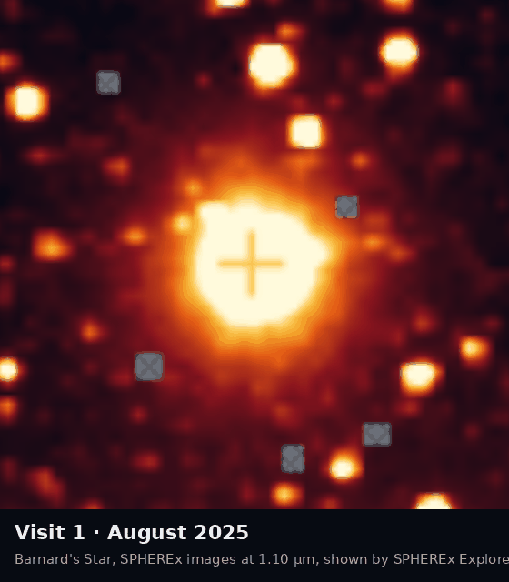
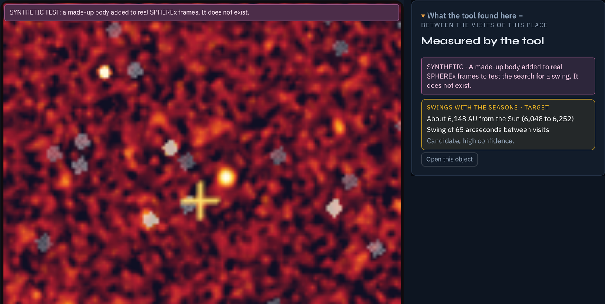

NASA Space Apps Challenge 2026 · Planet X and SPHEREx
NASA Space Apps Challenge 2026 · Planet X and SPHEREx
Team Foxtrot Zulu Kilo Lima
Yirmeyan, Nicolas, Daler
Local event: Montréal, Canada
fzkl-spaceapps-2026.pages.dev

Barnard's Star between two SPHEREx visits, one year apart. A capture of the tool.
The problem
NASA's SPHEREx telescope photographs the whole sky every six months, in 102 infrared colors. A moving star, a fading star or an unknown planet shows up as a change between two visits.
The challenge asks for a public tool that makes this as easy as WiseView made it for WISE.
The film of one place, playing in the tool.
Every image is SPHEREx data.
The tool
Barnard's Star moved by 10 arcseconds in one year. The tool lines up every image of a place, detector by detector, so that what changes on screen is the sky and not the color.
Any place in the sky works the same way, straight from NASA's public archive. A sentence under each button says what it does.
Beyond a viewer
The service follows every source of the field from visit to visit and lists the candidates, with a speed, a distance when it can be measured, and a confidence.
| Test target of the challenge | Measured | Catalog |
|---|---|---|
| Barnard's Star | 10.5″ per year | 10.39 |
| Epsilon Indi B | 4.63″ per year | 4.68 |
| WISE 0855 | 7.5″ per year | 8.15 |
| RW Aurigae | Half as bright near 4 µm: a known variable | |
| R Draconis | Too bright: followed through its halo | |
Pointed at WISE 0855 with no hint, it finds the cold brown dwarf where ESA's Gaia catalog holds nothing.
The sky map, where the guided tour picks a star. A capture of the tool.
Where to look
The all-sky cube that SPHEREx published in November 2026, in 99 wavelengths. The site opens on this map. Drag, zoom, and click anywhere: the tool opens on that place.
28 findings of our own checks are pinned, each with what catalogs say of it.
A visitor who notices something adds a pin in one click. A mark is a place and a category, with nothing to write, so there is nothing to moderate.
Validity
0.998
Our flux over the 2MASS and AllWISE catalogs, on 8 steady stars.
16 / 17
Nearby moving stars found with no position given, each speed within two sigma of its catalog.
0
False candidates in 32 quiet fields holding 831 sources.
634
Automated tests of the service, run on every change.
NASA data at the heart: SPHEREx spectral images (Data Release 1 and Quick Release 3) and the SPHEREx all-sky cube, from the NASA/IPAC Infrared Science Archive. The service reads only 1 percent of each file.
Space agency partner data: Gaia DR3 of the European Space Agency, drawn over the images and used to check every motion.
We also hid 2,560 made-up stars in real images to measure what the search misses, and we publish the misses with the hits.
Planet X, and what comes next
A body of the outer solar system swings with the seasons. The service follows that swing and reads a distance from it, between 1,600 and 24,000 astronomical units.
No such body is known, so we hid made-up ones in real images: 79 percent of those of 1 millijansky were found. The example in the tool is labeled SYNTHETIC.
Each new SPHEREx release adds a visit to every place of the sky. The tool reads the archive live, so it grows with the mission.
Tool fzkl-spaceapps-2026.pages.dev · Sky map /sky
Code github.com/Yirmeyan/fzkl-spaceapps-2026

The made-up example, labeled SYNTHETIC in the tool.